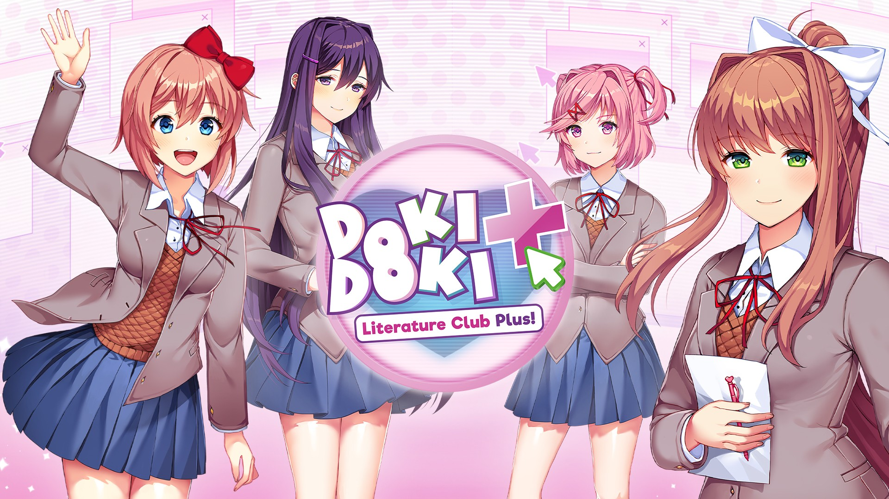
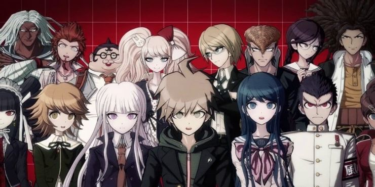
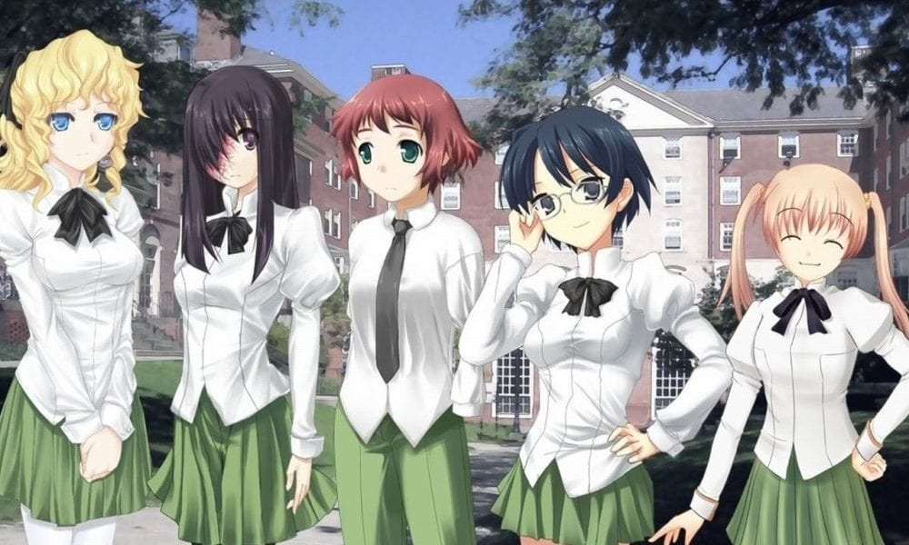
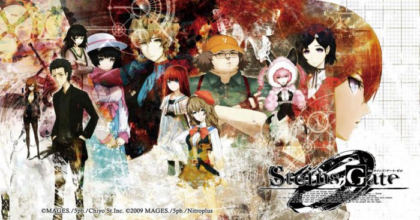

Visual Novels are amazing!
An interactive fiction video game genre, featuring text-based story with narrative style of literature and interactivity.
Famous visual novels
- Doki Doki Literature Club (DDLC) is a horror and psychological thriller visual novel that was released in 2017.
- Danganronpa is a thriller and adventure visual novel series that has a huge fanbase.
- Katawa Shoujo tells the story of 5 disabled girls and a young boy. Its storytelling gripped the hearts of many.
- Steins Gate is a visual novel that revolves around a group of students who have the power to change the past.
People say visual novels are more like books than games but I respectfully disagree. Ever read interactive books where your choices affect the story? Yeah that's what I thought
-Me, a very important person whose opinions you should definitely care about
Call to action! It's time!
Sign up for our product by clicking that button right over there!